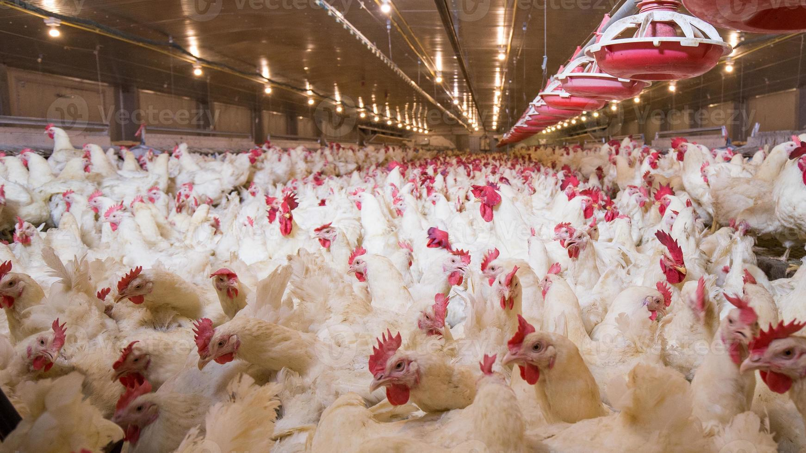
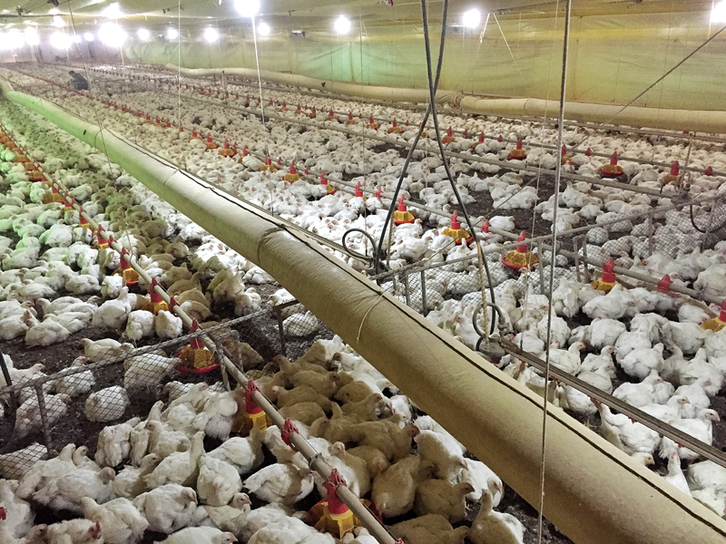
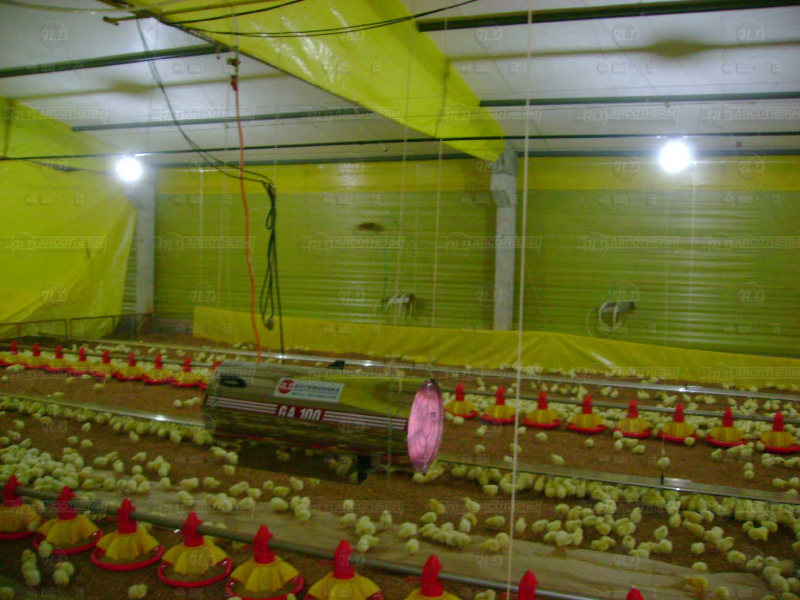

<!DOCTYPE  html>
<!--começo HTML-->
<html>
<!--Colar aqui as informações do site-->
<body>
<!--Colar/digitar  aqui as seções-->

<!--Colar/digitar  a referência ao arquivo JavaScript-->
</body>
<!--começo das informações internas do site-->
<head>
    <title>Do campo à cidade.</title>
    <meta  charset="UTF-8" />
    <meta  name="viewport"  content="width=device-width, initial-scale=1" />
    <link  rel="stylesheet"  href="stilo.css" />
    <link  rel="preconnect"  href="https://fonts.googleapis.com" />
    <link  rel="preconnect"  href="https://fonts.gstatic.com"  crossorigin />
    <link href="https://fonts.googleapis.com/css2?family=Lustria&display=swap" rel="stylesheet"/>
    </head>
    <!--fim das informações internas do site-->
</html>
<!--fim HTML-->
<!--começo cabeçalho visual do site-->
<header>
	<div  class="cabecalho img">
		
		<h1  class="texto__cabecalho">
			aviario e seus manejos.
		</h1>
		<a  class="cabecalho__botao"  href="https://www.nre.seed.pr.gov.br/modules/conteudo/conteudo.php?conteudo=53" target="_blank" >NRE IVAIPORÃ</a>
			<br />
	</div>
</header>
<!-- fim cabeçalho visual do site-->
<!-- primeira seção -->
<section  class="container">
	<div  class="secao1__descricao">
		<p  class="secao1__titulo">O que é avicultura?</p>
		<p  class="secao1__texto"> A avicultura de corte é um segmento da avicultura focado na criação intensiva de aves com o propósito específico de produzir carne. 
            Por isso,
             nesse sistema, as aves são selecionadas e criadas para atingir rapidamente o peso ideal para o abate, geralmente em torno de 40 dias de vida.
             A eficiência é um fator-chave, resultado de avanços em genética, nutrição, ambiência e práticas de manejo.
		
		</p>
	</div>
	
</section>
<!-- segunda seção -->
<section>
	<div  class="secao2__titulo">
		<p  class="secao2__img__titulo"> aquecimento do aviario.</p>
	</div>
	<div  class="secao2__imagens">
		<div>
			
		</div>
		<div>
			
		</div>
		<div>
		</div>
	</div>
	<div  class="secao2__subtitulo">
		<h2  class="secao2__img__subtitulo">
		A necessidade do aquecimento no aviário é para deixar as aves mais a vontade e confortavel durante seu crescimento.
        O aquecimento em antes da chegada das aves é muito importante, e deve ser feito de 24 a 48 horas antes
		de chegar as aves no aviário.
		Em geral, esse pré-aquecimento deve ser feito a uma temperatura ligeiramente mais alta do que o normal, por exemplo, uns 2 graus acima.
		</h2>
	</div>
</section>
<!-- fim da segunda -->